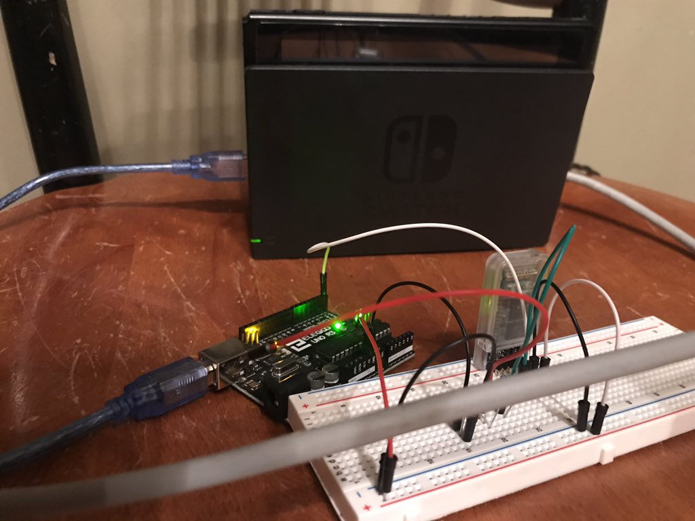
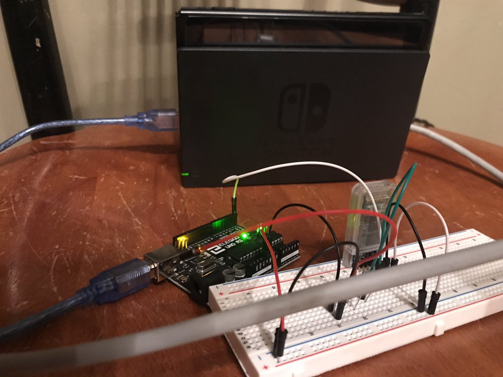

Hangboard Controller is a custom physical interface
emulating a Nintendo Switch controller that was developed to play EXOK's "Celeste".
The custom hangboard controller works through custom-flashed arduino firmware, an arduino sketch,
capacitive touch, ultrasonic data, and bluetooth. First, the controller is set up to have a number of
capacitive touch buttons, with paperclips used to detect touch. Additionally, an ultrasonic sensor is
set up above the hangboard to determine when I do a pull-up. The Arduino sketch on the Arduino Nano reads
in ultrasonic data, to see if I am doing a pull-up, as well as capacitive touch data, to see which buttons
I am holding. It would then relay these inputs over to the Arduino Uno through bluetooth connection.
The Arduino Uno sketch would take this bluetooth input and write it to serial, where a custom-flashed
firmware would emulate a wired switch controller, sending controller inputs through USB connected to my switch.
Project used a fork of @wchill 's Nintendo Switch HORIPAD emulator repository on Github and was developed over the course of a week.
Project Materials - Hardware
- 1 Arduino Uno
- 1 Arduino Nano
- 2 x HC-05 Bluetooth Module
- 1 x HC-SR04 Ultrasonic Sensor
- Breadboard + Wires + Resistors - various
- Soldering Iron
- Paperclips
- Tape
- Climbing Hangboard
- Chalk
- Projector
Year: 2019
Medium: Software, Electronics, Hangboard, Projector
Download Design Statement
Related Media:
GoNintendo Article
Nintendo Enthusiast Article
Freeplay 2020 Talk

 
